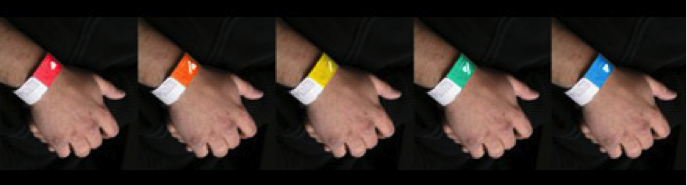

Neste problema deverá submeter um programa completo e poderá fazer uso da API do Java. Use o esqueleto de código dado que tem a estrutura necessária para representar uma versão de árvores de inteiros. Deve acrescentar os métodos que são pedidos e fazer escrever o output conforme solicitado. O input está considerado já no esqueleto de código dado.
As urgências Hospitalares existem para o atendimento rápido das situações de risco para a saúde, pelo que é claro que quanto mais grave a situação clínica mais rapidamente os pacientes devem ser atendidos. O Sistema de Triagem de Manchester, teve origem, tal como o nome indica, na cidade de Manchester, em Inglaterra, está testado internacionalmente e em funcionamento em vários hospitais portugueses. Está acreditado pelo Ministério da Saúde, Ordem dos Médicos, Ordem dos Enfermeiros e é entendido como mais um passo, no sentido de melhor atender quem recorre a um Serviço de Urgência, no qual se exige rapidez, na proporção da gravidade. Este sistema utiliza um protocolo clínico que permite classificar a gravidade da situação de cada doente que recorre ao Serviço de Urgência. Este método permite uma rápida identificação dos doentes que recorrem ao Serviço de Urgência, permitindo atender, em primeiro lugar, os doentes mais graves e não, necessariamente, quem chega primeiro.
Como se faz a Triagem de Prioridades?
Após efetuar a sua inscrição na Admissão de Doentes será encaminhado para o gabinete de triagem, onde será submetido a uma observação prévia, com identificação de um conjunto de sintomas ou de sinais que permitem atribuir uma cor que corresponde a um grau de prioridade clínica no atendimento e a um tempo de espera recomendado, até à primeira observação médica. Existem 5 cores, vermelho, laranja, amarelo, verde e azul, cada uma representando um grau de gravidade e um tempo de espera recomendado para o doente ser submetido a observação médica. A tabela seguinte faz o resumo das cores:
Figura com as cores da triagem de Manchester:

| Cor | Situação |
|---|---|
| Vermelho | Emergente |
| Laranja | Muito Urgente |
| Amarelo | Urgente |
| Verde | Pouco Urgente |
| Azul | Não Urgente |
O que acontece de seguida?
Decorrente do contacto inicial no gabinete de triagem, o doente é identificado com uma cor, representando um grau de gravidade e um tempo de espera recomendado para atendimento. Aos doentes com patologias mais graves é atribuída a cor vermelha, que corresponde a um atendimento imediato. Os casos muito urgentes recebem a cor laranja, com um tempo de espera recomendado de 10 minutos. Os casos urgentes, com a cor amarela, têm um tempo de espera recomendado de 60 minutos. Os doentes que recebem a cor verde e azul são casos de menor gravidade (pouco ou não urgentes) que, como tal, devem ser atendidos no espaço de duas e quatro horas, respetivamente, após atendimento dos doentes mais graves.
A sua tarefa é criar uma ferramenta informática
que permita gerir o atendimento dos pacientes numa urgência,
escolhendo quem é atendido primeiro e gerando estatísticas acerca dos
tempos de espera resultantes. Para tal, considere que a urgência
possui N equipas de urgência para atenderem um doente de cada
vez (considere-se 1 <= N <= 5). Cada doente que chega à
urgência tem um resultado de triagem que inclui a cor atribuída pelo
protocolo de Manchester (Vermelho, Laranja, Amarelo, Verde, Azul), o
tempo de chegada ao hospital, e o tempo que o seu atendimento
demorará. A ordem para doentes da mesma cor é garantida pelo
tempo de chegada à triagem, o que corresponde a dizer que
existe uma fila associada a cada cor atribuida na triagem. Quando uma
equipa de atendimento está livre, as filas são consultadas devendo ser
escolhido sempre um doente que está na frente de uma fila com maior
grau de urgência. Em caso de empate, deverá ser escolhido o doente que
chegou primeiro ao Hospital. Quando todos os doentes tiverem sido
atendidos, o programa termina.
A primeira linha do input contém o valor de uma flag
(0, 1, ou 2) que determina o tipo de resultados que pretendemos
observar. Segue-se numa segunda linha o número de equipas a fazerem
atendimento na urgência (valor de 1 a 5). As linhas seguintes, em
número indeterminado, fornecem informação de doentes que acabaram a
triagem inicial de atribuição de cor para serem atendidos. Cada linha possui uma string com o nome do
doente, seguida de uma string prioridade com a cor codificada pelo
protocolo de Manchester (“Vermelho”, “Laranja”, “Amarelo”, “Verde”,
“Azul”), de um inteiro t_chegada com o tempo de chegada em minutos ao
hospital (0 <= t_chegada < 1440), e de um inteiro t_atend com o tempo
que demorará o atendimento do doente.
Se flag==0, deverá apresentar
a cor ou cores de prioridade mais atribuída(s) na triagem. O output
deverá ser uma ou mais linhas, cada linha com uma string com o nome da
cor mais atribuída, seguida de um inteiro com o número de doentes com
essa cor. Haverá mais linhas no output caso se verifique um empate,
i.e. mais do que uma cor com o valor máximo.
Se flag==1 deverá apresentar a sequência em que os doentes
foram atendidos durante esse dia. Para tal, apresente uma linha por
doente, ordenada pela ordem de atendimento. Cada linha deverá ter uma
string com o nome do doente, seguida de um inteiro com o tempo de
chegada ao hospital, um inteiro com o tempo de espera até à entrada
num posto de atendimento, e um inteiro com o tempo de saída do
Hospital. No final deverá apresentar o tempo médio de espera
para ser atendido (tempo médio em minutos de espera dos doentes). Nesta flag, o número de equipas
de atendimento dado no input será sempre 1, o que simplifica muito a tomada
de decisão sobre o atendimento.
No caso de se ter flag==2, o número de equipas dado no input
é é um valor de 2 a 5, obrigando a cuidados na tomada de
decisão sobre quem faz o atendimento. Neste caso deverá apresentar:
Veja os exemplos de output para perceber os cabeçalhos e formatos de escrita pretendidos.
NOTA IMPORTANTE: para resolver este problema é-lhe fornecido uma uma parte de código que poderá re-utilizar e completar de modo a responder ao solicitado.
Input
0 2 MiguelCoimbra Laranja 0 20 RitaRibeiro Verde 0 5 FernandoSilva Amarelo 5 15
Output
Laranja 1 Amarelo 1 Verde 1
Input
1 1 MiguelCoimbra Laranja 0 20 RitaRibeiro Verde 0 5 FernandoSilva Amarelo 5 15
Output
--------------------------- Lista dos doentes atendidos --------------------------- MiguelCoimbra 0 0 20 FernandoSilva 5 15 35 RitaRibeiro 0 35 40 --------------------------- Tempo medio de espera: 16.7
Input
2 2 MiguelCoimbra Laranja 0 20 RitaRibeiro Verde 0 5 FernandoSilva Amarelo 5 15
Output
-----------------------
Equipa NDoentes MediaTA
-----------------------
0 1 20.0
1 2 10.0
---------------------------
Tempo medio de espera: 0.0
https://www.grupoportuguestriagem.pt/grupo-portugues-triagem/protocolo-triagem-manchester/ (consultado em Abril 2012)
Estruturas de Dados (CC1007), DCC-FCUP